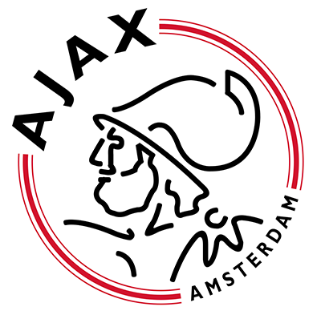
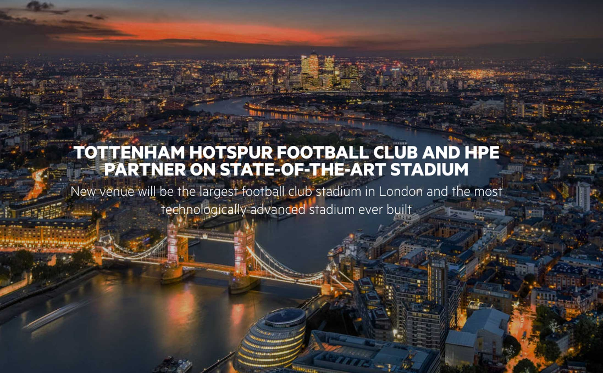

Ajax gaat spelers realtime analyseren dankzij 'hesjes met transponders'.
Bron: Ajax hesjes nu.nl 9 februari 2018
 Ajax voorziet spelers tijdens trainingen van hesjes met transponders om onder andere gegevens over afgelegde afstanden en snelheid te verkrijgen. Samen met HPE analyseert de club de data vervolgens met behulp van AI (Artificial Intelligence).
De transponders in de hesjes staan volgens Ajax en Hewlett Packard Enterprise (HPE) 'in verbinding met het veld' en kunnen zo afstanden, snelheid en veldpositie bepalen. Daarnaast registreert Ajax de lichaamstemperatuur en de hoeveelheid vocht die spelers verliezen. Hiervoor worden technische aanpassingen verricht aan Ajax' Sportpark de Toekomst.
Minder blessures
Het geheel wordt gebruikt om het maximale trainingsresultaat te behalen. Ook moet de kans op blessures zo klein mogelijk blijven. Volgens beide partijen kan ook kunstmatige intelligentie worden toegevoegd, wat naar verwachting ook nieuwe inzichten oplevert.
HPE en Ajax combineren de meetgegevens vervolgens met videobeelden. Het resultaat wordt weergegeven op een dashboard op smartphones en laptops van de technische staf. Bij de analyse past HPE kunstmatige intelligentie toe, al wordt uit het persbericht niet direct duidelijk hoe ai ingezet wordt. HPE wordt tot en met 30 juni 2023 strategisch partner voor de afdeling Ajax ICT.
Het project is onderdeel van een omvangrijker contract van HPE met Ajax. Het bedrijf gaat daarbij de technische infrastructuur voor de voetbalclub leveren. Eerder sloot HPE al een enigszins vergelijkbare overeenkomst met Tottenham Hotspur FC, maar onderdeel daarvan was ook de bouw van een 'stadion van de toekomst', met een draadloos netwerk met hoge capaciteit, inzicht in bezoekersstromen en socialmedia-analyse om gegevens over de sfeer te verkrijgen.
Het stadion, en de grond eromheen, gaat niet alleen functioneren als voetbalstadion, maar ook als stadion voor NFL wedstrijden. Daarbij zal het gehele complex dienen als sport-, vrijetijds- en entertainmentbestemming. Het zal ruimte bieden voor indoor extreme sporten zoals klimmen, een hotel met 180 slaapkamers, 579 nieuwe woningen, een medisch centrum en een groot publiek plein met verschillende activiteiten.
Eén van de hoogtepunten (letterlijk) is de Sky Walk op 40 meter hoogte. Een spectaculaire trekpleister voor fans en toeristen die het mogelijk maakt om het stadion te beklimmen en een rondje te maken op het dak.